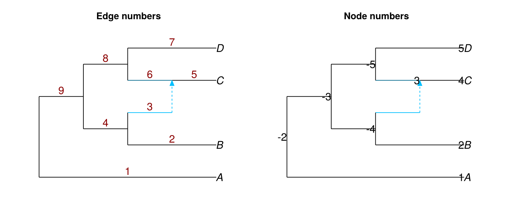
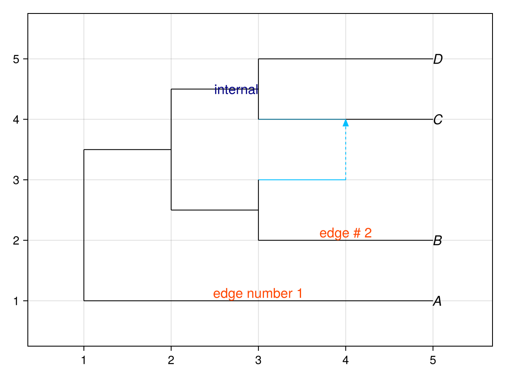
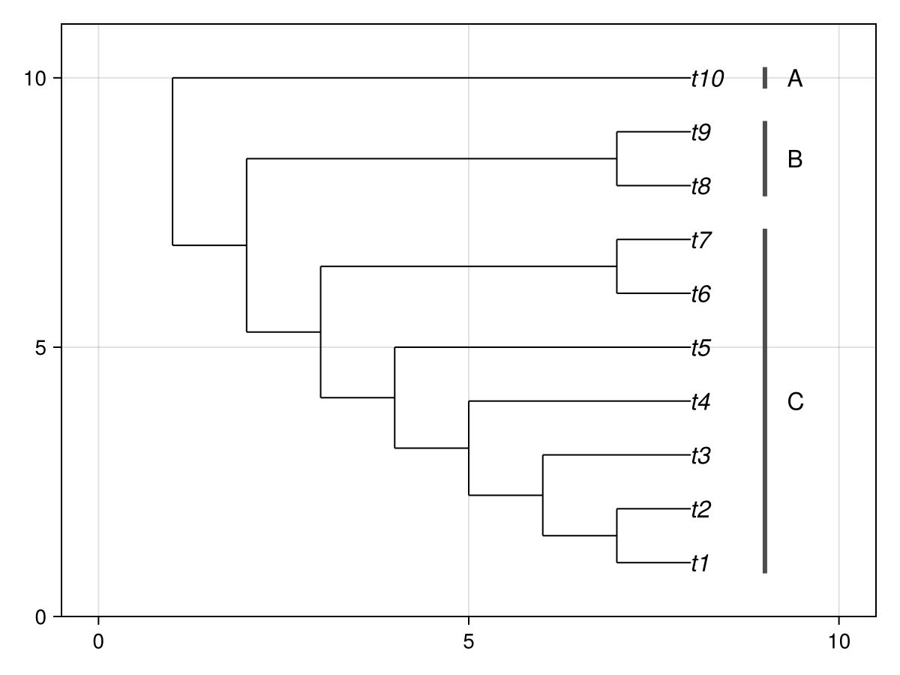

Adding data
PhyloMakie accepts node and edge label tables and exposes rendered coordinate tables for custom Makie annotations.
Adding labels
Show node or edge numbers when you need the identifiers used by label tables:
net = readnewick("(A,((B,#H1),((C)#H1,D)));")
figure = Figure(size = (760, 320))
edge_axis = Axis(figure[1, 1], title = "Edge numbers")
node_axis = Axis(figure[1, 2], title = "Node numbers")
hidedecorations!(edge_axis)
hidedecorations!(node_axis)
hidespines!(edge_axis)
hidespines!(node_axis)
plot!(edge_axis, net; showedgenumber = true, edgenumbercolor = "red4")
plot!(node_axis, net; shownodenumber = true)
figure
Label tables must have at least 2 columns. The first column gives the node or edge number. The second column gives the label text.
| number | label |
|---|---|
| 1 | "edge number 1" |
| 2 | "edge # 2" |
julia> DataFrame(number = [1, 2], label = ["edge number 1", "edge # 2"])2×2 DataFrame Row │ number label │ Int64 String ─────┼─────────────────────── 1 │ 1 edge number 1 2 │ 2 edge # 2
Pass the table to edgelabel or nodelabel:
edge_labels = DataFrame(
number = [1, 2],
label = ["edge number 1", "edge # 2"],
)
node_labels = DataFrame(
number = [-5],
label = ["internal"],
)
plot(
net;
edgelabel = edge_labels,
nodelabel = node_labels,
edgelabelcolor = "orangered",
nodelabelcolor = "navy",
)
Querying coordinates
Use node_positions and edge_positions to get the coordinates used by the current rendered plot:
surface = plot(net; useedgelength = true, style = :majortree)
first(node_positions(surface.plot), 4)4×5 DataFrame
| Row | number | name | isleaf | x | y |
|---|---|---|---|---|---|
| Int64 | String | Bool | Float64 | Float64 | |
| 1 | 1 | A | true | 5.0 | 1.0 |
| 2 | 2 | B | true | 5.0 | 2.0 |
| 3 | -4 | false | 3.0 | 2.0 | |
| 4 | 4 | C | true | 5.0 | 3.0 |
first(edge_positions(surface.plot), 4)4×6 DataFrame
| Row | number | ishybrid | ismajor | gamma | x | y |
|---|---|---|---|---|---|---|
| Int64 | Bool | Bool | Float64? | Float64 | Float64 | |
| 1 | 1 | false | true | 1.0 | 3.0 | 1.0 |
| 2 | 2 | false | true | 1.0 | 4.0 | 2.0 |
| 3 | 3 | true | false | missing | 3.5 | 2.5 |
| 4 | 4 | false | true | 1.0 | 2.5 | 2.0 |
The query functions read from the live plot. If you update a plotted network or plot attribute, the returned coordinates reflect that update.
Adding Makie annotations
The queried coordinates and the returned Makie axis can be used with ordinary Makie plotting functions:
tree = readnewick("(((((((t1,t2),t3),t4),t5),(t6,t7)),(t8,t9)),t10);")
surface = plot(tree; xlim = (0.0, 10.0), showtiplabel = true)
axis = surface.axis
lines!(axis, [9.0, 9.0], [0.8, 7.2]; color = :gray30, linewidth = 3)
lines!(axis, [9.0, 9.0], [7.8, 9.2]; color = :gray30, linewidth = 3)
lines!(axis, [9.0, 9.0], [9.8, 10.2]; color = :gray30, linewidth = 3)
text!(axis, 9.3, 4.0; text = "C", align = (:left, :center), fontsize = 16)
text!(axis, 9.3, 8.5; text = "B", align = (:left, :center), fontsize = 16)
text!(axis, 9.3, 10.0; text = "A", align = (:left, :center), fontsize = 16)
surface.figure